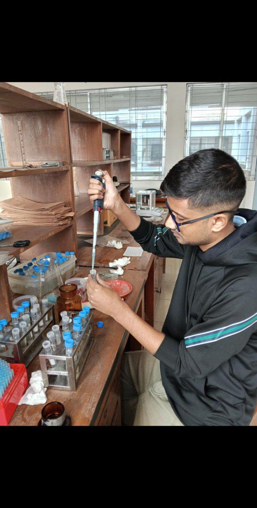

Molecular markers help describe diversity and support selection when field seasons are limited. A reliable routine from leaf to data reduces lost samples and ambiguous bands.
Young, healthy leaves; unique labels that match the field book; cool storage until extraction. Avoid mixing genotypes when several people collect on the same day.
Follow a validated extraction kit or CTAB protocol suited to legumes. Quantify roughly before PCR. Always run positive and negative controls. Record gel or capillary results with the same sample IDs used in the field.
Degraded DNA, overloaded wells, and swapped labels cause most rework. A lab notebook (or shared sheet) that links tube ID → plot ID → gel lane prevents silent errors.